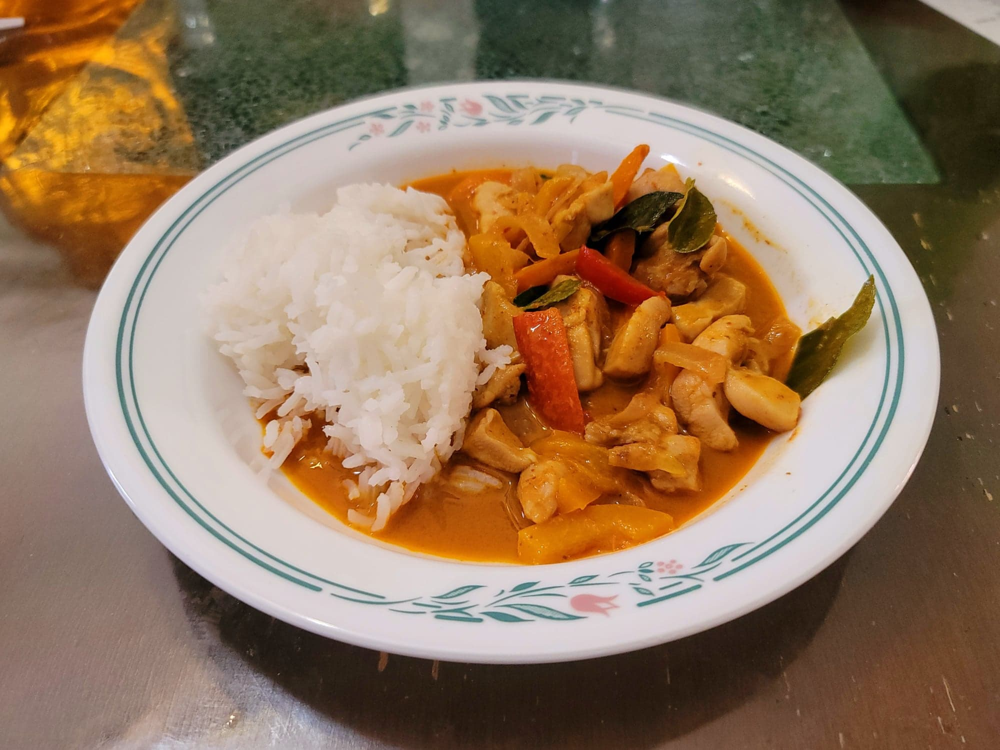

Panang Curry

Ingredients:
- 1 1/2 lb Chicken thighs, boneless, skinless, cut into bite-size pieces against the grain
- 1 small Onion, sliced
- 1 tbsp Coconut oil
- 1 Red bell pepper, julienned
- 1 Orange bell pepper, julienned
- 2 cloves Garlic, minced
- 4 oz Panang curry paste
- 1 tbsp Peanut butter
- 14 oz Coconut milk
- 12 Kaffir lime leaves, crushed, bruised, and torn
- 3 tbsp Fish sauce
- 1/4 cup Thai basil leaves
Instructions:
- In a very large 12 inch pan over medium heat, place in the coconut oil and let melt. Once melted add in the onion and sauté until just beginning to soften, about 1 minute. Then add in the bell peppers and garlic. Sauté for another 3-4 minutes.
- Move the onion, bell peppers, and garlic to the side of the pan so that it is mostly off the heat. Add the peanut butter and panang curry paste to the side of the pan on the heat and sauté until very fragrant, about 2-3 minutes.
- Add in the coconut milk, kaffir lime leaves, and fish sauce and stir to combine. Then add in the chicken. Bring to a boil and then reduce to a simmer. Let cook uncovered, stirring occasionally, for 10-15 minutes or until the chicken is cooked through.
- Remove from heat and stir in the thai basil. Serve hot over rice.